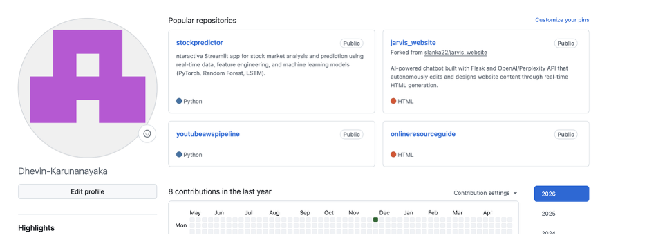

GitHub
GitHub is an important resource for computer science majors because it allows students to store, organize, and showcase their coding work. For Penn State students, GitHub can act as a portfolio where they display class projects, personal projects, internship work, and coding practice.
Using GitHub also helps students become more comfortable with version control, collaboration, and professional software development workflows. A strong GitHub profile can make it easier for recruiters and employers to see a student's technical skills, project experience, and growth over time.
How it helps a Penn State CS major
- Showcases coding projects and technical experience
- Builds familiarity with Git and version control
- Helps students create a public project portfolio
- Supports collaboration on software development projects

Official link: Visit GitHub